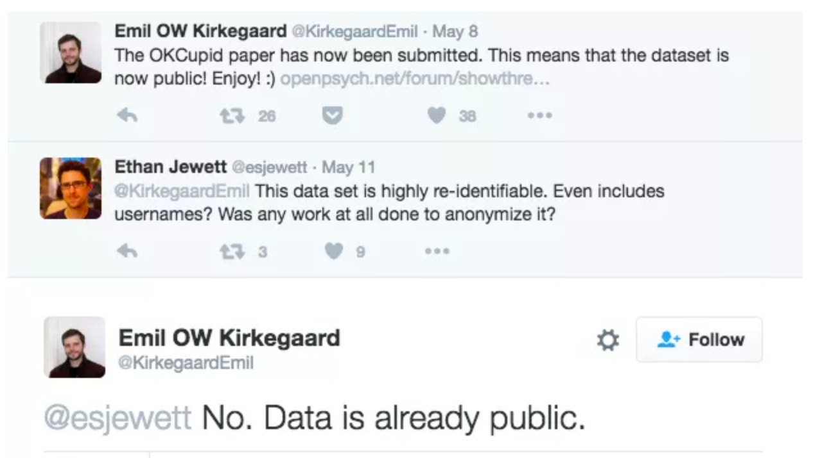

import requests
from bs4 import BeautifulSoup
import pandas as pd
import nltk
from nltk.corpus import stopwords
from nltk.tokenize import word_tokenize
from afinn import Afinn
import matplotlib.pyplot as plt
import seaborn as sns
from collections import Counter
import numpy as np
import ssl
try:
_create_unverified_https_context = ssl._create_unverified_context
except AttributeError:
pass
else:
ssl._create_default_https_context = _create_unverified_https_context
nltk.download('stopwords')
nltk.download('punkt')
nltk.download('punkt_tab')
sns.set_style("whitegrid")Web scraping
Lecture 8
Dr. Greg Chism
University of Arizona
INFO 511 - Spring 2025
Setup
Before continuing…
- If you haven’t yet done so: Install a Chrome browser and the SelectorGadget extension:
- Go to your
aerepo, commit any remaining changes, push, and then pull for today’s application exercise.
Reading The Arizona Daily Wildcat
How often do you read The Arizona Daily Wildcat?
Every day
3-5 times a week
Once a week
Rarely
Reading The Arizona Daily Wildcat
What do you think is the most common word in the titles of The Arizona Daily Wildcat opinion pieces?
Analyzing The Arizona Daily Wildcat
Analyzing The Arizona Daily Wildcat
All of this analysis is done in Python!
(mostly) with tools you already know!
Common works in The Arizona Daily Wildcat titles
Code for the earlier plot:
stop_words = set(stopwords.words('english'))
wildcat['tokens'] = wildcat['title'].apply(lambda x: [word.lower() for word in word_tokenize(x) if word.isalpha() and word.lower() not in stop_words])
word_counts = Counter(word for title in wildcat['tokens'] for word in title)
common_words = pd.DataFrame(word_counts.most_common(20), columns=['word', 'count'])
plt.figure(figsize=(10, 5))
sns.barplot(x='count', y='word', data=common_words, palette='viridis')
plt.xlabel('Number of mentions')
plt.ylabel('Word')
plt.title('Arizona Daily Wildcat - Opinion pieces\nCommon words in the most recent opinion pieces')
plt.show()Avg sentiment scores of titles
Code for the earlier plot:
stop_words = set(stopwords.words('english'))
wildcat['tokens'] = wildcat['title'].apply(lambda x: [word.lower() for word in word_tokenize(x) if word.isalpha() and word.lower() not in stop_words])
afinn = Afinn()
wildcat['sentiment'] = wildcat['title'].apply(lambda x: afinn.score(x))
author_sentiment = wildcat.groupby(['author', 'title'])['sentiment'].sum().reset_index()
author_summary = author_sentiment.groupby('author').agg(n_articles=('title', 'count'), avg_sentiment=('sentiment', 'mean')).reset_index()
author_summary = author_summary[(author_summary['n_articles'] > 1) & (author_summary['author'].notna())]
top_positive = author_summary.nlargest(10, 'avg_sentiment')
top_negative = author_summary.nsmallest(10, 'avg_sentiment')
top_authors = pd.concat([top_positive, top_negative])
top_authors['neg_pos'] = np.where(top_authors['avg_sentiment'] < 0, 'neg', 'pos')
top_authors['label_position'] = np.where(top_authors['neg_pos'] == 'neg', 0.25, -0.25)
top_authors = top_authors.sort_values(by='avg_sentiment', ascending=True)
plt.figure(figsize=(8, 6))
sns.barplot(x='avg_sentiment', y='author', data=top_authors, hue='neg_pos', dodge=False, palette={'neg': '#4d4009', 'pos': '#FF4B91'})
plt.xlabel('negative ← Average sentiment score (AFINN) → positive')
plt.ylabel(None)
plt.title('The Arizona Daily Wildcat - Opinion pieces\nAverage sentiment scores of titles by author')
plt.legend([], [], frameon=False)
plt.xlim(-5, 5)
plt.grid(False)
plt.gca().invert_yaxis()
plt.show()Where is this data coming from?
Where is this data coming from?
title author \
0 BOOK REVIEW: ‘Fresh Fruit, Broken Bodies’ by D... Andres F. Diaz
1 OPINION: The first presidential debate lacked ... Luke Lawson
2 OPINION: College WBB favorites and sleeper pic... Melisa Guzeloglu
3 OPINION: College MBB favorites and sleeper pic... Nathaniel Levin
4 EDITORIAL: A desk altered but opinions thrive ... Editor-in-Chief
.. ... ...
995 Here’s how to best help Nepal Hailey Dickson
996 Adderall abuse not harmless Maddie Pickens
997 Court rule is legitimate judge Jacob Winkelman
998 Letters to the editor: May 4, 2015 Gabriel Schivone
999 Capability imperfectly captured by TCEs Maddie Pickens
date abstract column \
0 July 22, 2024 NaN Opinion
1 July 3, 2024 NaN Opinion
2 March 15, 2024 NaN Opinion
3 March 15, 2024 NaN Opinion
4 March 15, 2024 NaN Opinion
.. ... ... ...
995 May 5, 2015 NaN Opinion
996 May 5, 2015 NaN Opinion
997 May 4, 2015 NaN Opinion
998 May 4, 2015 NaN Opinion
999 May 4, 2015 NaN Opinion
url \
0 https://wildcat.arizona.edu/155604/opinions/bo...
1 https://wildcat.arizona.edu/155594/opinions/op...
2 https://wildcat.arizona.edu/154146/opinions/s-...
3 https://wildcat.arizona.edu/154116/opinions/s-...
4 https://wildcat.arizona.edu/154126/opinions/ed...
.. ...
995 https://wildcat.arizona.edu/123054/opinions/he...
996 https://wildcat.arizona.edu/102511/opinions/ad...
997 https://wildcat.arizona.edu/127949/opinions/co...
998 https://wildcat.arizona.edu/142548/opinions/le...
999 https://wildcat.arizona.edu/100073/opinions/ca...
tokens sentiment
0 [book, review, fresh, fruit, broken, bodies, s... 0.0
1 [opinion, first, presidential, debate, lacked,... 0.0
2 [opinion, college, wbb, favorites, sleeper, pi... -1.0
3 [opinion, college, mbb, favorites, sleeper, pi... -1.0
4 [editorial, desk, altered, opinions, thrive, w... 0.0
.. ... ...
995 [best, help, nepal] 5.0
996 [adderall, abuse, harmless] -3.0
997 [court, rule, legitimate, judge] 0.0
998 [letters, editor, may] 0.0
999 [capability, imperfectly, captured, tces] 1.0
[1000 rows x 8 columns]Web scraping
Scraping the web: what? why?
Increasing amount of data is available on the web
These data are provided in an unstructured format: you can always copy&paste, but it’s time-consuming and prone to errors
Web scraping is the process of extracting this information automatically and transform it into a structured dataset
Two different scenarios:
Screen scraping: extract data from source code of website, with html parser (easy) or regular expression matching (less easy).
Web APIs (application programming interface): website offers a set of structured http requests that return JSON or XML files.
Hypertext Markup Language
Most of the data on the web is still largely available as HTML - while it is structured (hierarchical) it often is not available in a form useful for analysis (flat / tidy).
<html>
<head>
<title>This is a title</title>
</head>
<body>
<p align="center">Hello world!</p>
<br/>
<div class="name" id="first">John</div>
<div class="name" id="last">Doe</div>
<div class="contact">
<div class="home">555-555-1234</div>
<div class="home">555-555-2345</div>
<div class="work">555-555-9999</div>
<div class="fax">555-555-8888</div>
</div>
</body>
</html>BeautifulSoup
- The BeautifulSoup package makes basic processing and manipulation of HTML data straight forward
- beautiful-soup-4.readthedocs.io

BeautifulSoup
Core functions:
requests.get(url)- send an HTTP GET request to a URLBeautifulSoup(html, 'html.parser')- parse HTML data from a stringsoup.select('selector')- select specified elements from the HTML document using CSS selectorselement.get_text()- extract text content from an elementelement['attribute']- extract attribute value from an element
HTML, BeautifulSoup, & requests
html = '''
<html>
<head>
<title>This is a title</title>
</head>
<body>
<p align="center">Hello world!</p>
<br/>
<div class="name" id="first">John</div>
<div class="name" id="last">Doe</div>
<div class="contact">
<div class="home">555-555-1234</div>
<div class="home">555-555-2345</div>
<div class="work">555-555-9999</div>
<div class="fax">555-555-8888</div>
</div>
</body>
</html>
'''Selecting elements
More selecting tags
[<div class="name" id="first">John</div>, <div class="name" id="last">Doe</div>, <div class="contact">
<div class="home">555-555-1234</div>
<div class="home">555-555-2345</div>
<div class="work">555-555-9999</div>
<div class="fax">555-555-8888</div>
</div>, <div class="home">555-555-1234</div>, <div class="home">555-555-2345</div>, <div class="work">555-555-9999</div>, <div class="fax">555-555-8888</div>]CSS selectors
- We will use a tool called SelectorGadget to help us identify the HTML elements of interest by constructing a CSS selector which can be used to subset the HTML document.
- Some examples of basic selector syntax is below,
| Selector | Example | Description |
|---|---|---|
| .class | .title |
Select all elements with class=“title” |
| #id | #name |
Select all elements with id=“name” |
| element | p |
Select all <p> elements |
| element element | div p |
Select all <p> elements inside a <div> element |
| element>element | div > p |
Select all <p> elements with <div> as a parent |
| [attribute] | [class] |
Select all elements with a class attribute |
| [attribute=value] | [class=title] |
Select all elements with class=“title” |
CSS classes and ids
[<div class="name" id="first">John</div>, <div class="name" id="last">Doe</div>]Text with get_text()
HTML tables with read_html()
SelectorGadget
SelectorGadget (selectorgadget.com) is a javascript based tool that helps you interactively build an appropriate CSS selector for the content you are interested in.
Application exercise
Opinion articles in The Arizona Daily Wildcat
Go to https://wildcat.arizona.edu/category/opinions/.
How many articles are on the page?
Goal
- Scrape data and organize it in a tabular format in Python
- Perform light text parsing to clean data
- Summarize and visualze the data
ae-06
- Open a new window in VS Code (File > New Window) and open the project called ae.
- If there are any uncommitted files, commit them, and then click Pull.
- Open the file called
wildcat-scrape.pyand follow along.
Recap
- Use the SelectorGadget identify tags for elements you want to grab
- Use BeautifulSoup to first read the whole page (into Python) and then parse the object you’ve read in to the elements you’re interested in
- Put the components together in a data frame and analyze it like you analyze any other data
A new Python workflow
- When working in a Jupyter notebook, your analysis is re-run each time you execute the notebook
- If web scraping in a notebook, you’d be re-scraping the data each time you run the notebook, which is undesirable (and not nice)!
- An alternative workflow:
Use a Python script to save your code
Saving interim data scraped using the code in the script as CSV or pickle files
Use the saved data in your analysis in your notebook
Web scraping considerations
Ethics: “Can you?” vs “Should you?”

“Can you?” vs “Should you?”
Challenges: Unreliable formatting
Challenges: Data broken into many pages

Workflow: Screen scraping vs. APIs
Two different scenarios for web scraping:
Screen scraping: extract data from source code of website, with html parser (easy) or regular expression matching (less easy)
Web APIs (application programming interface): website offers a set of structured http requests that return JSON or XML files